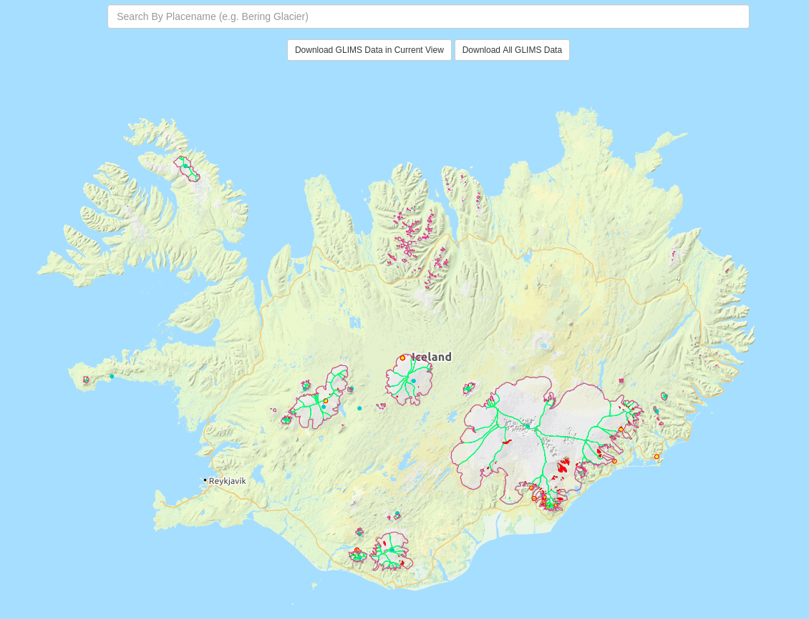
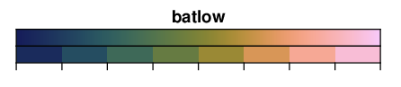

8. Visualize Raster Data Using a Colormap¶
Attention
This instruction is for the Modern Mode in GMT 6.
We have introduced the basic skills to fill your map with colors in the previous chapters. Now we are going to continue this topic and show how to paint anywhere you like on a map using a colormap.
8.1. Goal¶
Using the ITS_LIVE dataset 1 provided by the National Aeronautics and Space Administration (NASA) and the GLIMS glacier outline dataset 2 provided by the National Snow and Ice Data Center (NSIDC), plot the glacier speed of all the glaciers in Iceland. To easily read the glacier speed, we also need to add a colorbar in the bottom showing the relationship between different colors and speeds. The largest ice cap in the island, Vatnajökull, is also labeled on the map. The fastest glacier in Iceland flows from this ice cap with a speed of more than 400 meters per year. The glacierized areas without speed data are shown in gray on the map.

Go to the final Script
8.2. Commands and Techniques¶
basemap- set up mapping area, axes, and map framecoast- plot shorelines and fill land/sea areaclip- only plot data within given polygon regionsmakecpt- Make and adjust a color palette tablegrdimage- plot colored imageplot- plot polygonscolorbar- plot color bartext- Make text labels in a mapGMT shared options:
--long commandExternal command
gdalwarp- reproject a raster file and convert it to NetCDF formatHow to read the content in a color palette table (CPT)
8.3. Tasks before plotting¶
We will use two different external datasets: the glacier speeds and the glacier outlines. Thanks to the development of technology, we can get both datasets free online.
First, let’s take a loot at glacier speeds. NASA’s ITS_LIVE (Inter-mission Time Series of Land Ice Velocity and Elevation) project provides multi-year time series of glacier speeds worldwide 3. Go to ITS_LIVE data search page and click on the region of Iceland, a small white sub-window will jump out like this:

Click the blue button and select the dataset of “Composite: 240m” (Multi-year composite data, 240-m posting). Finally, click the link at “v” (velocity) and download ICE_G0240_0000_v.tif. This is a GeoTIFF file, a format also used for storing gridded rasters, which is similar to the NetCDF format that GMT supports. However, GeoTIFF files use .tif as their file extension and have additional metadata such as the grid projection and the coordinate system information. This raster used the NSIDC polar stereographic projection. In order to let GMT read the file correctly, we need to use gdalwarp, a command of GDAL library, for converting Geotiff to NetCDF and reprojecting the file to lat/lon format (EPSG:4326):
$ gdalwarp -t_srs EPSG:4326 -dstnodata NaN -of NetCDF ICE_G0240_0000_v.tif ICE_G0240_0000_v_EPSG4326.nc
# Meaning of the options:
# -t_srs: the projection of the output file (EPSG represents numbered code for projection. EPSG:4326 is exactly WGS84 lat/lon system.)
# -dstnodata: the output file will use this value as no-data (NaN means to use the float-point number of "NaN" value)
# -of: output file format
Note that we use a different file extension .nc indicating a NetCDF-format raster file.
Note
You can use anything you want for the file extension here. Still, for better identification, I only recommend using .nc or .grd (as we mentioned before) for the file extension of a NetCDF file.
Now we are going to download another dataset, the glacier outlines. The GLIMS database (Global Land Ice Measurements from Space) of NSIDC provides global glacier data 4, but here we only need the data of Iceland. Go to GLIMS Glacier Viewer and slide the view to Iceland. You should see something like this:
{kind=link}
Click “Download GLIMS Data in Current View.” In the newly opened window, locate the “File format” menu and select GMT format, and leave other options as default. Finally, click the “Download Data” button. Extract the downloaded file and locate the glims_polygons.gmt; this one is the polygon data of the glacier outlines, which we will use in this chapter. Rename it to glims_iceland_glacier_outlines.gmt for better identification.
Note
This .gmt file is actually a text file, which can be opened by a text editor. We will explain this format in detail in Plot Vector Data.
For your convenience, you can also download the files used in this chapter from the links below:
8.4. Procedure¶
Firstly we use basemap for specifying map frame, map extent, size, etc. Here we are introducing a new way to assign map extent. In the previous chapter, -R option is usually given as W/E/S/N border coordinates. However, if the map fits a country, then we can simply use the 2-character code of that country (see Pen and Painting), with +R for adjusting the distance between the map frame and the country border. Thus, our basemap command becomes:
gmt basemap -Baf -BWNEs -RIS+R0.2 -JM15c
# -RIS+R0.2: use Iceland (IS) as the map extent. The distance between the national border of Iceland and the map frame is 0.2 degrees
Now we can review the commands and options we learned from the previous chapters and plot the coastline of Iceland:
gmt begin iceland_glacier_speed png
gmt basemap -Baf -BWNEs -RIS+R0.2 -JM15c
gmt coast -Wthinnest,darkred -Gdarkseagreen1 -Slightblue -A1
gmt end

The coordinates are not showing at the bottom of the map, which is reserved for the color bar.
Our next step is to plot the glacier speeds, but before this we need to determine a good color map. In the previous examples, we used the built-in colormap designed for topographical data. Since no colormaps are intentionally designed for representing glacier speeds, we need to design it ourselves. The steps to do this using GMT are
Choose a master colormap (pre-defined combination of colors without the corresponding value range), or choose several colors and make your own master colormap
Use
makecptorgrd2cptfor specifying what color corresponds to what value, and also information like background color, foreground color, etc.Use
grdimageor other commands requiring a colormap to plot your data
In this chapter, we will introduce the easiest way, which is picking up a master colomap and then using makecpt to make a colormap for your map. For advanced skills, please go to Edit CPT and Colorbar.
The complete list of master colormaps GMT supports can be found at the official manual page. Here I am using the “batlow” colormap, as shown in this figure. You can also choose other colormap you like to replace it.
Now we are going to decide the value range. You can use GIS software to open ICE_G0240_0000_v_EPSG4326.nc and check the histogram of pixel values, or you can use grdinfo or GDAL’s gdalinfo and look up the maximum and minimum values in the terminal. For your convenience, I have provided a reasonable range here: 0 to 400. The unit of this raster file is m/yr (meters per year). After deciding the master colormap and the value range, we can now use the makecpt command. Its basic syntax is
gmt makecpt -Cparent_cpt [-Tmin/max/spacing] [-Z]
-C is the only required option, but -T is also very important since it is used to specify the value range. You have to enter the minimum and the maximum number of your range (that will correspond to the colormap), and spacing means the interval to sample the color from the master colormap. Let us try to type the following command in the terminal:
$ gmt makecpt -Cbatlow -T0/400/100
0 15/58.875/95 100 15/58.875/95
100 77.625/114.62/76.375 200 77.625/114.62/76.375
200 191.75/144/56.375 300 191.75/144/56.375
300 253/180.12/181.25 400 253/180.12/181.25
B 1/25/89
F 250/204/250
N white
Press enter and you will see the details of this new colormap:
The main part of this colormap is composed of 4 columns of data. The first and the third column are the value range, and the second and the fourth column are the RGB color values for this range. Take the first line, for example, this colormap says it uses this color
15/58.875/95for any value between0and100.When the spacing is set to
100, this colormap would only have 4 color segments.The last three lines of the colormap (
B,F,N) are for the following three special situations:Brepresents the color used for any value lower than the minimum value of the range.Frepresents the color used for any value higher than the maximum value of the range.Nrepresents the color used for NaN (no-data value).
If we add the -Z option, then we will be creating a continuous colormap (color varies between two sample points) instead of a discrete colormap (same color between two sample points):
$ gmt makecpt -Cbatlow -T0/400/100 -Z
0 1/25/89 100 34.75/91.75/96
100 34.75/91.75/96 200 128/129.5/51
200 128/129.5/51 300 244.25/158.25/113.75
300 244.25/158.25/113.75 400 250/204/250
B 1/25/89
F 250/204/250
N white
You can notice that the color in columns 2 and 4 are now different from each other. Take the first line, for example: if the pixel value is between 0 and 100, GMT would find the corresponding color by linear interpolation.
In this script, we will set makecpt as follows:
gmt makecpt -Cbatlow -T0/400/10 -D -Z -M --COLOR_NAN=gray
# -C: master colormap name (batlow)
# -T: corresponding range (0 to 400; sample a color from the master colormap using an interval of 10)
# -D: using the end-member colors for background and foreground colors (This will change the settings of B and F; any number higher than 400 will have the same color as 400; any number lower than 0 will have the same color as 0.)
# -Z: making a continuous colormap
# -M: using the default NaN color in GMT as the NaN color for the colormap (This will change the setting of N.)
# --COLOR_NAN: specifying the default NaN color in GMT (To be explained later)
Here we used the option --COLOR_NAN. This kind of option is called “long command, which is different from -R or -Z, etc. (short commands) in terms of syntax. We have to use the following syntax for a long command:
$ gmt command --long_command_name=long_coomand_value ... # Like short commands, we can add as many long commands as we like in a single line
Combining -M and --COLOR_NAN, we can freely change the color for NaN values.
Tip
All of the GMT default parameters can be reset using long commands. You can view the full list of these parameters by entering the following command:
$ gmt defaults -D
For details, please go to Design Map Layout.
In GMT 6 (Modern mode), the colormap information will be saved in a temporary file after you run makecpt. Thus, when you use grdimage later in your script to plot something, you don’t need to include -C option and any colormap map; GMT would automatically read this temporary file and apply the newly created colormap to the grid file.
Note
In GMT 6 (Classic mode) and the older versions of GMT, you have to use the redirecting character > for saving the new colormap as a file, and then you can use the file for the following commands. See this page for details.
Now we can try to plot glacier speeds using grdimage:
speed_file=ICE_G0240_0000_v_EPSG4326.nc
gmt begin iceland_glacier_speed png
gmt basemap -Baf -BWNEs -RIS+R0.2 -JM15c
gmt coast -Wthinnest,darkred -Gdarkseagreen1 -Slightblue -A1
gmt makecpt -Cbatlow -T0/400/10 -D -Z -M --COLOR_NAN=gray
gmt grdimage $speed_file
gmt end

Wait a second… the outline of Iceland is gone! Take a look at the difference from the previous map, and you’ll know this is because ICE_G0240_0000_v_EPSG4326.nc has lots of NaN points, so a vast area on the map is covered by gray. We can try to just move the coast command to the next line of grdimage for plotting the coastline again, but this does not help the situation because the filling of coast command would cover all output from grdimage. How to keep the land filling from coast while plotting the glacier speeds on the map? Now we have to use the clip command. Here’s how to use the clip command:
gmt clip extent_file
gmt grdimage ...
gmt clip -C
The extent_file has to be an ascii-fromat vector (shape)file containing polygons. We will describe more about this kind of file more in Plot Vector Data. The glims_iceland_glacier_outlines.gmt that we downloaded earlier exactly follows this format. All commands in between two clip commands will only be effective within the polygons defined by the extent file. If we use the glacier outlines here, then GMT will only plot glacier speeds within these outlines. Thus, the gray areas of NaN will be largely reduced. Apply this command segment to our script:
speed_file=ICE_G0240_0000_v_EPSG4326.nc
glacier_outline=glims_iceland_glacier_outlines.gmt
gmt begin iceland_glacier_speed png
gmt basemap -Baf -BWNEs -RIS+R0.2 -JM15c
gmt coast -Wthinnest,darkred -Gdarkseagreen1 -Slightblue -A1
# path clipping begins
gmt clip $glacier_outline
gmt makecpt -Cbatlow -T0/400/10 -D -Z -M --COLOR_NAN=gray
gmt grdimage $speed_file
gmt clip -C
# path clipping ends here
gmt end

Finally, our goal has achieved. Note that there are still some gray patches on the map, but this is completely normal since the data of glacier speeds do not cover 100% of the glacier extent. We can just keep them.
For the last few steps of map making, we are going to review the commands and skills we picked up from the previous chapters. Here we will add the glacier outlines (plot), colorbar (colorbar), and the label showing the location of Vatnajökull (text). The following code simply lists some options used and their meanings. If you need a more detailed explanation, please go to Pen and Painting and Scatter Plot.
gmt plot $glacier_outline -Wthinner,black
# -W: uses black thin lines
gmt colorbar -DJCB+w6c+ef -Bx100+l"Glacier Speed (m/yr)"
# -DJ: plot the colorbar at one of the 2-character positions (CB - bottom centered) OUTSIDE the map. 6 cm wide (+w6c),
# plot a triangle at the maximum value indicating that there are values higher than this (+ef)
# -B: tick interval set to 100 (x100), the meaning and the unit of the colormap shown at the bottom (+l"Glacier Speed (m/yr)")
echo -16.8 64.95 Vatnajökull | gmt text -F+f12p+jCM
# -F: font size set to 12 points (+f12p), vertically and horizontally center-aligned to the given coordinates (+jCM)
8.5. Script¶
The final script for our map is:
# ==== Setting input files ====
speed_file=ICE_G0240_0000_v_EPSG4326.nc
glacier_outline=glims_iceland_glacier_outlines.gmt
# ==== Main commands ====
gmt begin iceland_glacier_speed png
gmt basemap -Baf -BWNEs -RIS+R0.2 -JM15c # basemap
gmt coast -Wthinnest,darkred -Gdarkseagreen1 -Slightblue -A1 # coastline and filling
gmt clip $glacier_outline # polygon path clipping begins
gmt makecpt -Cbatlow -T0/400/10 -D -Z -M --COLOR_NAN=gray # making the colormap used in this map
gmt grdimage $speed_file # plot glacier speed within the polygons
gmt clip -C # polygon path clippling ends
gmt plot $glacier_outline -Wthinner,black # glacier outlines
gmt colorbar -DJCB+w6c+ef -Bx100+l"Glacier Speed (m/yr)" # colorbar
echo -16.8 64.95 Vatnajökull | gmt text -F+f12p+jCM # text label
gmt end
Note
“Make a map showing glacier speeds in Iceland. Use Iceland’s country border plus-minus 0.2 degree as the map extent. Use batlow as the master colormap of glacier speeds, and relate it to a range of 0 to 400. We sample colors from the master colormap and make a continuous colormap. Gray represents areas with no data. Glacier speeds will be only plotted within the glacier outlines defined by glims_iceland_glacier_outlines.gmt. Lastly, we plot the glacier outlines, a colorbar, and a label showing the location of Vatnajökull.”
Check the final map
8.6. Exercise¶
Using
dem4as the master colormap, make a topographical map of Iceland. Attach the colorbar.Plot the topography of Iceland again using any colormap you like, but this time try to fill all glacier-covered area with blue.
- 1
Gardner, A. S., M. A. Fahnestock, and T. A. Scambos, 2019 [updated 2020]: ITS_LIVE Regional Glacier and Ice Sheet Surface Velocities. Data archived at National Snow and Ice Data Center; doi:10.5067/6II6VW8LLWJ7.
- 2
Raup, B.H.; A. Racoviteanu; S.J.S. Khalsa; C. Helm; R. Armstrong; Y. Arnaud (2007). “The GLIMS Geospatial Glacier Database: a New Tool for Studying Glacier Change”. Global and Planetary Change 56:101–110. (doi:10.1016/j.gloplacha.2006.07.018)
- 3
Gardner, A. S., G. Moholdt, T. Scambos, M. Fahnstock, S. Ligtenberg, M. van den Broeke, and J. Nilsson, 2018: Increased West Antarctic and unchanged East Antarctic ice discharge over the last 7 years, Cryosphere, 12(2): 521–547, doi:10.5194/tc-12-521-2018.
- 4
GLIMS and NSIDC (2005, updated 2019): Global Land Ice Measurements from Space glacier database. Compiled and made available by the international GLIMS community and the National Snow and Ice Data Center, Boulder CO, U.S.A. DOI:10.7265/N5V98602